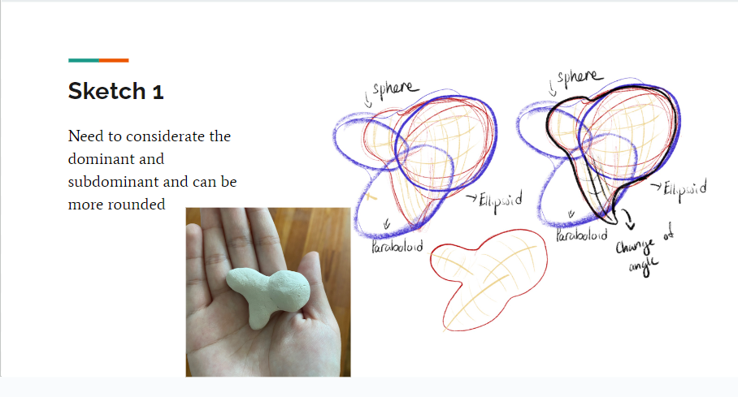

Welcome to
Explore The World of Artistic Projects
Sketchbook Showcase
Drawing Fundamentals


2D Fundamentals
3D Fundamentals

The Artist Behind the Canvas
Sabrina Tan is an aspiring artist based in Singapore.
She is passionate about creating art that reflects her experiences, emotions, and the beauty of everyday life.
Sabrina's work is known for its vibrant colors, intricate details, and the ability to evoke deep emotions in the viewer.
She believes that art is a universal language that can bridge gaps and connect people from different backgrounds.
Sabrina's artistic journey is a reflection of her curiosity, creativity, and the exploration of various artistic mediums.
Get In Touch
Feel free to get in touch with me using the contact information below:
Email: sabrinatanzhenya@gmail.com
Phone: 123-456-7890